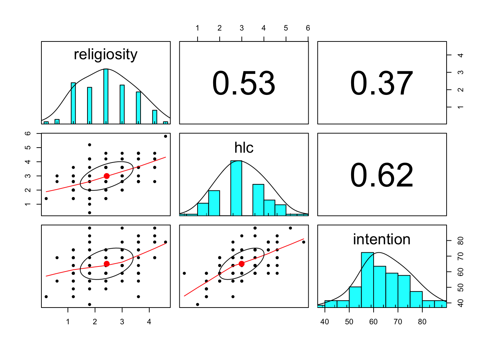
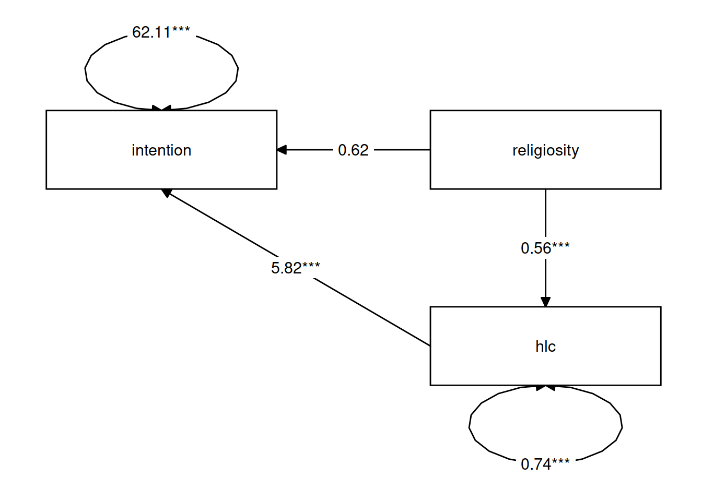

Path Mediation
Information about solutions
Solutions for these exercises are available immediately below each question.
We would like to emphasise that much evidence suggests that testing enhances learning, and we strongly encourage you to make a concerted attempt at answering each question before looking at the solutions. Immediately looking at the solutions and then copying the code into your work will lead to poorer learning.
We would also like to note that there are always many different ways to achieve the same thing in R, and the solutions provided are simply one approach.
Relevant packages
- lavaan
- semPlot or tidySEM
- mediation
Mediating variables
Let’s imagine we are interested in peoples’ intention to get vaccinated, and we observe the following variables:
- Intention to vaccinate (scored on a range of 0-100)
- Health Locus of Control (HLC) score (average score on a set of items relating to perceived control over ones own health)
- Religiosity (average score on a set of items relating to an individual’s religiosity).
If we draw out our variables, and think about this in the form of a standard regression model with “Intention to vaccinate” as our outcome variable, then all the lines are filled in for us (see Figure 1)

Figure 1: Multiple regression as a path model
But what if our theory suggests that some other model might be of more relevance? For instance, what if we believe that participants’ religiosity has an effect on their Health Locus of Control score, which in turn affects the intention to vaccinate (see Figure 2)?
. I haven't properly read it though!)](images/path/path2.png)
Figure 2: Mediation as a path model (If you’re interested, you can find the inspiration for this data from the paper here. I haven’t properly read it though!)
In this case, the HLC variable is thought of as a mediator, because it mediates the effect of religiosity on intention to vaccinate. In this theoretical model, we distinguishing between two possible types of effect: direct and indirect.
Direct vs Indirect
In path diagrams:
- Direct effect = one single-headed arrow between the two variables concerned
- Indirect effect = An effect transmitted via some other variables
Path Mediation
We’ve seen how path analysis works in last week’s lab, and we can use that same logic to investigate models which have quite different structures such as those including mediating variables.
Because we have multiple endogenous variables here, then we’re immediately drawn to path analysis, because we’re in essence thinking of conducting several regression models. As we can’t fit our theoretical model into a nice straightforward regression model (we would need several), then we can use path analysis instead, and just smush lots of regressions together, allowing us to estimate things all at once.
So let’s look at fitting our mediation model.
Data: VaxDat.csv
100 parents were recruited and completed a survey that included measures of Health Locus of Control, Religiosity, and a sliding scale of 0 to 100 on how definite they were that their child would receive the vaccination for measles, mumps & rubella.
- Intention to vaccinate (scored on a range of 0-100)
- Health Locus of Control (HLC) score (average on a set of 5 items - each scoring 0 to 6 - relating to perceived control over ones own health)
- Religiosity (average on a set of 5 items - each scoring 0 to 6 - relating to an individual’s religiosity).
The data is available at https://uoepsy.github.io/data/vaxdat.csv
First we read in our data:
vax <- read_csv("https://uoepsy.github.io/data/vaxdat.csv")
summary(vax)## religiosity hlc intention
## Min. :-1.0 Min. :0.40 Min. :39.0
## 1st Qu.: 1.8 1st Qu.:2.00 1st Qu.:59.0
## Median : 2.4 Median :3.00 Median :64.0
## Mean : 2.4 Mean :2.99 Mean :65.1
## 3rd Qu.: 3.0 3rd Qu.:3.60 3rd Qu.:74.0
## Max. : 4.6 Max. :5.80 Max. :88.0It looks like we have a value we shouldn’t have there. We have a value of religiosity of -1. But the average of 5 items which each score 0 to 6 will have to fall within those bounds.
Let’s replace any values <0 with NA.
vax <-
vax %>%
mutate(religiosity = ifelse(religiosity < 0, NA, religiosity))
summary(vax)## religiosity hlc intention
## Min. :0.20 Min. :0.40 Min. :39.0
## 1st Qu.:1.80 1st Qu.:2.00 1st Qu.:59.0
## Median :2.40 Median :3.00 Median :64.0
## Mean :2.43 Mean :2.99 Mean :65.1
## 3rd Qu.:3.00 3rd Qu.:3.60 3rd Qu.:74.0
## Max. :4.60 Max. :5.80 Max. :88.0
## NA's :1Now let’s just check the marginal distributions of each variable.
There are lots of functions that we might use, but for a quick eyeball, I quite like the pairs.panels() and multi.hist() functions from the psych package.
library(psych)
pairs.panels(vax)
Okay, we’re ready to start thinking about our model.
First we specify the relevant paths:
med_model <- "
intention ~ religiosity
intention ~ hlc
hlc ~ religiosity
"If we fit this model as it is, we won’t actually be testing the indirect effect, we will simply be fitting a couple of regressions.
To specifically test the indirect effect, we need to explicitly define the indirect effect in our model, by first creating a label for each of its sub-component paths, and then defining the indirect effect itself as the product of these two paths (why the product? Click here for a lovely explanation from Aja Murray).
To do this, we use a new operator, :=.
med_model <- "
intention ~ religiosity
intention ~ a*hlc
hlc ~ b*religiosity
indirect:=a*b
":=
This operator ‘defines’ new parameters which take on values that are an arbitrary function of the original model parameters. The function, however, must be specified in terms of the parameter labels that are explicitly mentioned in the model syntax.
Note. The labels we use are completely up to us. This would be equivalent:
med_model <- "
intention ~ religiosity
intention ~ peppapig * hlc
hlc ~ kermit * religiosity
indirect:= kermit * peppapig
"Estimating the model
It is common to estimate the indirect effect using a bootstrapping approach (remember, bootstrapping involves resampling the data with replacement, thousands of times, in order to empirically generate a sampling distribution).
Why do we bootstrap mediation analysis?
We compute our indirect effect as the product of the sub-component paths. However, this results in the estimated indirect effect rarely following a normal distribution, and makes our usual analytically derived standard errors & p-values inappropriate.
Instead, bootstrapping has become the norm for assessing sampling distributions of indirect effects in mediation models.
We can do this easily in lavaan:
mm1.est <- sem(med_model, data=vax, se = "bootstrap")
summary(mm1.est, ci = TRUE)## lavaan 0.6-9 ended normally after 25 iterations
##
## Estimator ML
## Optimization method NLMINB
## Number of model parameters 5
##
## Used Total
## Number of observations 99 100
##
## Model Test User Model:
##
## Test statistic 0.000
## Degrees of freedom 0
##
## Parameter Estimates:
##
## Standard errors Bootstrap
## Number of requested bootstrap draws 1000
## Number of successful bootstrap draws 1000
##
## Regressions:
## Estimate Std.Err z-value P(>|z|) ci.lower ci.upper
## intention ~
## religiosty 0.616 1.134 0.543 0.587 -1.644 2.716
## hlc (a) 5.823 0.976 5.968 0.000 3.901 7.647
## hlc ~
## religiosty (b) 0.557 0.086 6.511 0.000 0.381 0.723
##
## Variances:
## Estimate Std.Err z-value P(>|z|) ci.lower ci.upper
## .intention 62.112 7.996 7.768 0.000 44.626 76.700
## .hlc 0.741 0.103 7.183 0.000 0.538 0.946
##
## Defined Parameters:
## Estimate Std.Err z-value P(>|z|) ci.lower ci.upper
## indirect 3.243 0.721 4.500 0.000 1.852 4.741We can see that the 95% bootstrapped confidence interval for the indirect effect of religiosity on intention to vaccinate does not include zero. We can conclude that the indirect effect is significant at \(p <.05\). The direct effect is not significantly different from zero, suggesting that we have complete mediation (religiosity has no effect on intention to vaccinate after controlling for health locus of control).
Partial/Complete Mediation
If we have a variable \(X\) that we take to cause variable \(Y\), then our path diagram will look like so:
In this diagram, path \(c\) is the total effect. This is the unmediated effect of \(X\) on \(Y\).
However, while the effect of \(X\) on \(Y\) could in part be explained by the process of being mediated by some variable \(M\), the variable \(X\) could still affect \(Y\) directly.
Our mediating model is shown below:

In this case, path \(c'\) is the direct effect.
Complete mediation is when \(X\) no longer affects \(Y\) after \(M\) has been controlled (so path \(c'\) is not significantly different from zero). Partial mediation is when the path from \(X\) to \(Y\) is reduced in magnitude when the mediator \(M\) is introduced, but still different from zero.
Finally, we can visualise the estimates for our model using the semPaths() function from the semPlot package, and also with the graph_sem() function from the tidySEM package.
Often, if we want to include a path diagram in a report then the output of these functions would not usually meet publication standards, and instead we tend to draw them in programs like powerpoint!)
library(tidySEM)
graph_sem(mm1.est)
Exercises
This week’s lab focuses on the technique of path analysis using data on conduct problems in adolescence.
Data: conduct problems
A researcher has collected data on n=557 adolescents and would like to know whether there are associations between conduct problems (both aggressive and non-aggressive) and academic performance and whether the relations are mediated by the quality of relationships with teachers.
| variable | description |
|---|---|
| ID | Participant ID |
| Acad | Academic performance (standardised) |
| Teach_r | Teacher Relationship Quality (standardised) |
| Non_agg | Non-aggressive conduct problems (standardised) |
| Agg | Aggressive conduct problems (standardised) |
The data is available at https://uoepsy.github.io/data/cp_teachacad.csv
First, read in the dataset from https://uoepsy.github.io/data/cp_teachacad.csv
cp_teach<-read_csv("https://uoepsy.github.io/data/cp_teachacad.csv")
summary(cp_teach)## ID Acad Teach_r Non_agg Agg
## Min. : 1 Min. :-3.042 Min. :-3.68 Min. :-3.28 Min. :-3.27
## 1st Qu.:140 1st Qu.:-0.736 1st Qu.:-0.89 1st Qu.:-0.69 1st Qu.:-0.73
## Median :279 Median :-0.026 Median : 0.01 Median :-0.09 Median :-0.02
## Mean :279 Mean :-0.061 Mean :-0.09 Mean :-0.06 Mean :-0.02
## 3rd Qu.:418 3rd Qu.: 0.606 3rd Qu.: 0.62 3rd Qu.: 0.57 3rd Qu.: 0.68
## Max. :557 Max. : 3.057 Max. : 3.52 Max. : 3.44 Max. : 3.31
Use the sem() function in lavaan to specify and estimate a straightforward linear regression model to test whether aggressive and non-aggressive conduct problems significantly predict academic performance.
How do your results compare to those you obtain using the lm() function?
# we can fit the model in lavaan as follows:
# first we specify the model using lavaan syntax
sr_lavaan<-'Acad~Non_agg+Agg'
# next we can estimate the model using the sem() function
sr_lavaan.est<-sem(sr_lavaan, data=cp_teach)
# we can inspect the results using the summary() function
summary(sr_lavaan.est)## lavaan 0.6-9 ended normally after 13 iterations
##
## Estimator ML
## Optimization method NLMINB
## Number of model parameters 3
##
## Number of observations 557
##
## Model Test User Model:
##
## Test statistic 0.000
## Degrees of freedom 0
##
## Parameter Estimates:
##
## Standard errors Standard
## Information Expected
## Information saturated (h1) model Structured
##
## Regressions:
## Estimate Std.Err z-value P(>|z|)
## Acad ~
## Non_agg 0.182 0.057 3.178 0.001
## Agg 0.318 0.057 5.599 0.000
##
## Variances:
## Estimate Std.Err z-value P(>|z|)
## .Acad 0.943 0.057 16.688 0.000# the same model can be fit using lm():
sr_lm<-lm(Acad~Non_agg+Agg, data=cp_teach)
summary(sr_lm)##
## Call:
## lm(formula = Acad ~ Non_agg + Agg, data = cp_teach)
##
## Residuals:
## Min 1Q Median 3Q Max
## -2.8962 -0.5957 0.0073 0.6219 3.1325
##
## Coefficients:
## Estimate Std. Error t value Pr(>|t|)
## (Intercept) -0.0420 0.0414 -1.02 0.3097
## Non_agg 0.1824 0.0576 3.17 0.0016 **
## Agg 0.3181 0.0570 5.58 3.7e-08 ***
## ---
## Signif. codes: 0 '***' 0.001 '**' 0.01 '*' 0.05 '.' 0.1 ' ' 1
##
## Residual standard error: 0.974 on 554 degrees of freedom
## Multiple R-squared: 0.194, Adjusted R-squared: 0.191
## F-statistic: 66.5 on 2 and 554 DF, p-value: <2e-16We can see that both non-aggressive and aggressive conduct problems significantly predict academic perfofmance. We can also see that we get the same results when we use the sem() function as we do when we use the lm() function. Lavaan will give essentially the same results as lm() for simple and multiple regression problems. However, if we have multiple outcome variables in our model it is advantageous to do this using path mediation model with lavaan. This allows us to include all the regressions in a single model.
Now specify a model in which non-aggressive conduct problems have both a direct and indirect effect (via teacher relationships) on academic performance
model1<-'
#we regress academic performance on non-aggressive conduct problems (the direct effect)
Acad~Non_agg
#we regress academic peformance on teacher relationship quality
Acad~Teach_r
#we regress teacher relationship quality on non-aggressive conduct problems
Teach_r~Non_agg
'
Make sure in your model you define (using the := operator) the indirect effect in order to test the hypothesis that non-aggressive conduct problems have both a direct and an indirect effect (via teacher relationships) on academic performance.
Fit the model and examine the 95% CI.
#model specification
model1<-'
Acad~Non_agg
#we label the two parameters that comprise the indirect effect b and c
Acad~b*Teach_r
Teach_r~c*Non_agg
# the indirect effect is the product of b and c. We create a new parameter (ind) to estimate the indirect effect
ind:=b*c
'
#model estimation
model1.est<-sem(model1, data=cp_teach, se='bootstrap')
# we request bootstrapped standard errors to assess the signifance of the indirect effect
summary(model1.est, ci=T)## lavaan 0.6-9 ended normally after 13 iterations
##
## Estimator ML
## Optimization method NLMINB
## Number of model parameters 5
##
## Number of observations 557
##
## Model Test User Model:
##
## Test statistic 0.000
## Degrees of freedom 0
##
## Parameter Estimates:
##
## Standard errors Bootstrap
## Number of requested bootstrap draws 1000
## Number of successful bootstrap draws 1000
##
## Regressions:
## Estimate Std.Err z-value P(>|z|) ci.lower ci.upper
## Acad ~
## Non_agg 0.158 0.059 2.692 0.007 0.046 0.274
## Teach_r (b) 0.328 0.049 6.673 0.000 0.234 0.424
## Teach_r ~
## Non_agg (c) 0.769 0.033 23.271 0.000 0.702 0.836
##
## Variances:
## Estimate Std.Err z-value P(>|z|) ci.lower ci.upper
## .Acad 0.919 0.055 16.665 0.000 0.805 1.024
## .Teach_r 0.713 0.042 16.878 0.000 0.632 0.796
##
## Defined Parameters:
## Estimate Std.Err z-value P(>|z|) ci.lower ci.upper
## ind 0.252 0.039 6.518 0.000 0.177 0.327We can see that the 95% bootstrapped confidence interval for the indirect effect of non-aggressive conduct problems on academic performance (‘ind’) does not include zero. We can conclude that the indirect effect is significant at \(p <.05\). The direct effect is also statistically significant at \(p < .05\).
Specify a new parameter which is the total (direct+indirect) effect of non-aggressive conduct problems on academic performance.
Hint: we should have already got labels in our model for the constituent effects, so we can just use := to create a sum of them.
We can create a new parameter that is the sum of the direct and indirect effect to evaluate the total effect of non-aggressive conduct problems on academic performance.
#model specification
model1<-'
# we now also label the indirect effect of non-aggressive conduct problems on academic performance
Acad~a*Non_agg
Acad~b*Teach_r
Teach_r~c*Non_agg
ind:=b*c
#the total effect is the indirect effect plus the direct effect
total:=b*c+a
'
#model estimation
model1.est<-sem(model1, data=cp_teach,se='bootstrap')
# we request bootstrapped standard errors to assess the signifance of the indirect effect
summary(model1.est, ci=T)## lavaan 0.6-9 ended normally after 13 iterations
##
## Estimator ML
## Optimization method NLMINB
## Number of model parameters 5
##
## Number of observations 557
##
## Model Test User Model:
##
## Test statistic 0.000
## Degrees of freedom 0
##
## Parameter Estimates:
##
## Standard errors Bootstrap
## Number of requested bootstrap draws 1000
## Number of successful bootstrap draws 1000
##
## Regressions:
## Estimate Std.Err z-value P(>|z|) ci.lower ci.upper
## Acad ~
## Non_agg (a) 0.158 0.056 2.813 0.005 0.046 0.263
## Teach_r (b) 0.328 0.048 6.798 0.000 0.235 0.417
## Teach_r ~
## Non_agg (c) 0.769 0.032 23.692 0.000 0.707 0.833
##
## Variances:
## Estimate Std.Err z-value P(>|z|) ci.lower ci.upper
## .Acad 0.919 0.056 16.525 0.000 0.804 1.026
## .Teach_r 0.713 0.045 15.963 0.000 0.623 0.800
##
## Defined Parameters:
## Estimate Std.Err z-value P(>|z|) ci.lower ci.upper
## ind 0.252 0.038 6.620 0.000 0.177 0.325
## total 0.410 0.042 9.812 0.000 0.326 0.490
Now visualise the estimated model and its parameters using either the semPaths() function from the semPlot package, or the graph_sem() function from the tidySEM package.
#to include the parameter estimates we set what='est'
semPaths(model1.est, what = "est") 
graph_sem(model1.est)
A more complex model
Now specify a model in which both aggressive and non-aggressive conduct problems have both direct and indirect effects (via teacher relationships) on academic performance. Include the parameters for the indirect effects.
We now have two predictors, one mediator and one outcome (and two indirect effects, one for each predictor). We can represent this in two lines: one where we specify academic performance as the outcome variable and one where we specify teacher relationships (the mediator) as the outcome variable.
model2<-
'Acad~Agg+Non_agg+b*Teach_r
Teach_r~c1*Agg+c2*Non_agg
ind1:=b*c1 #indirect effect for aggressive conduct problems
ind2:=b*c2 #indirect effect for non-aggressive conduct problems
'
Now estimate the model and test the significance of the indirect effects
model2.est<-sem(model2, data=cp_teach,se='bootstrap')
summary(model2.est, ci=T)## lavaan 0.6-9 ended normally after 18 iterations
##
## Estimator ML
## Optimization method NLMINB
## Number of model parameters 7
##
## Number of observations 557
##
## Model Test User Model:
##
## Test statistic 0.000
## Degrees of freedom 0
##
## Parameter Estimates:
##
## Standard errors Bootstrap
## Number of requested bootstrap draws 1000
## Number of successful bootstrap draws 1000
##
## Regressions:
## Estimate Std.Err z-value P(>|z|) ci.lower ci.upper
## Acad ~
## Agg 0.171 0.061 2.828 0.005 0.053 0.291
## Non_agg 0.091 0.062 1.454 0.146 -0.036 0.211
## Teach_r (b) 0.256 0.053 4.846 0.000 0.145 0.357
## Teach_r ~
## Agg (c1) 0.574 0.046 12.613 0.000 0.485 0.666
## Non_agg (c2) 0.358 0.041 8.637 0.000 0.272 0.438
##
## Variances:
## Estimate Std.Err z-value P(>|z|) ci.lower ci.upper
## .Acad 0.908 0.058 15.537 0.000 0.786 1.018
## .Teach_r 0.540 0.029 18.486 0.000 0.479 0.599
##
## Defined Parameters:
## Estimate Std.Err z-value P(>|z|) ci.lower ci.upper
## ind1 0.147 0.033 4.479 0.000 0.080 0.217
## ind2 0.092 0.021 4.318 0.000 0.050 0.137We can see that the 95% confidence intervals for both indirect effects do not include zero, therefore, we can conclude that they are significant at \(p < .05\).
Write a brief paragraph reporting on the results of the model estimates in Question B2. Include a figure or table to display the parameter estimates.
A path mediation model was used to test the direct and indirect effects (via teacher relationship quality) of aggressive and non-aggressive conduct problems on academic performance. In the model, academic performance was regressed on teacher relationship quality, non-aggressive conduct problems and aggressive conduct problems while teacher relationship quality (the mediator) was regressed on aggressive and non-aggressive conduct problems. The indirect effects were tested using the product of the coefficient for the regression of outcome on mediator and the coefficient for the regression of mediator on predictor. The statistical significance of the indirect effects were evaluated using boostrapped 95% confidence intervals with 1000 draws.
Unstandardised parameter estimates are provided in Figure 3. Solid lines indicate that a parameter is significant at \(p <. 05\), while dashed lines represent non-significant paths.The indirect effects of both non-aggressive (\(b = 0.09\), 95% CI=0.05-0.14) and aggressive (\(b = 0.15\), 95% CI=0.08-0.22) conduct problems on academic performance were statistcally significant.

Figure 3: Effect of conduct problems on academic performance mediated by quality of teacher relationship.
Following Baron & Kenny 1986, we can conduct mediation analysis by using three separate regression models.
- \(y \sim x\)
- \(x \sim m\)
- \(y \sim x + m\)
Step 1. Determine the presence of y ~ x:
if x predicts y, then there is possibility to detect mediation
vax <- read_csv("https://uoepsy.github.io/data/vaxdat.csv")
mod1 <- lm(intention ~ religiosity, data = vax)
summary(mod1)$coefficients## Estimate Std. Error t value Pr(>|t|)
## (Intercept) 57.2 2.422 23.61 3.17e-42
## religiosity 3.3 0.929 3.55 5.84e-04Step 2. Determine the presence of m ~ x:
if x predicts m, then there is possibility to detect mediation
mod2 <- lm(hlc ~ religiosity, data = vax)
summary(mod2)$coefficients## Estimate Std. Error t value Pr(>|t|)
## (Intercept) 1.775 0.2229 7.96 3.04e-12
## religiosity 0.508 0.0855 5.94 4.36e-08Step 3. Examine the effect of y ~ x + m:
If the x no longer predicts y after partialling out effects due to m, then there is full mediation. If the effect of x on y is smaller, then there is partial mediation.
mod3 <- lm(intention ~ religiosity + hlc, data = vax)
summary(mod3)$coefficients## Estimate Std. Error t value Pr(>|t|)
## (Intercept) 46.58 2.610 17.846 2.10e-32
## religiosity 0.27 0.910 0.297 7.67e-01
## hlc 5.97 0.922 6.478 3.85e-09Step 4. Test for the mediation.
There are various ways to do this, but the simplest is probably:
library(mediation)
summary(mediate(mod2, mod3, treat='religiosity', mediator='hlc', boot=TRUE, sims=500))##
## Causal Mediation Analysis
##
## Nonparametric Bootstrap Confidence Intervals with the Percentile Method
##
## Estimate 95% CI Lower 95% CI Upper p-value
## ACME 3.033 1.866 4.49 <2e-16 ***
## ADE 0.270 -1.600 2.32 0.83
## Total Effect 3.303 1.385 5.39 <2e-16 ***
## Prop. Mediated 0.918 0.510 1.95 <2e-16 ***
## ---
## Signif. codes: 0 '***' 0.001 '**' 0.01 '*' 0.05 '.' 0.1 ' ' 1
##
## Sample Size Used: 100
##
##
## Simulations: 500ACME: Average Causal Mediation Effects ADE: Average Direct Effects Total Effect: sum of the mediation (indirect) effect and the direct effect.